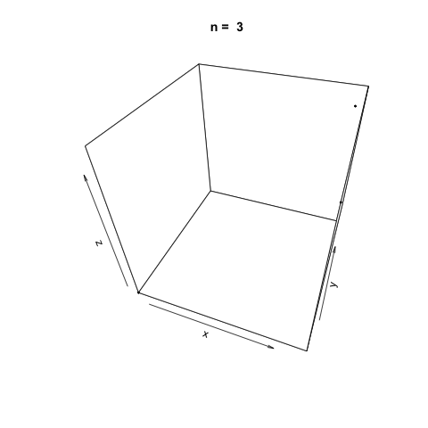

Multiplicative congruential generators, also known as Lehmer random number generators, is a type of linear congruential generator for generating pseudorandom numbers in \(U(0, 1)\). The multiplicative congruential generator, often abbreviated as MLCG or MCG, is defined as a recurrence relation similar to the LCG with \(c = 0\).
Unlike the LCG, the parameters \(a\) and \(m\) for multiplicative congruential generators are more restricted and the initial seed \(X_0\) must be relatively prime to the modulus \(m\) (the greatest common divisor between \(X_0\) and \(m\) is 0). The current parameters in common use are \(m = 2^31 − 1 = 2147483647\) and \(a = 7^5 = 16807\). However, in a correspondence from the Communications of the ACM, Park, Miller and Stockmeyer changed the value of the parameter \(a\), stating:
The minimal standard Lehmer generator we advocated had a modulus of m = 2^31 - 1 and a multiplier of a = 16807. Relative to this particular choice of multiplier, we wrote "... if this paper were to be written again in a few years it is quite possible that we would advocate a different multiplier .... " We are now prepared to do so. That is, we now advocate a = 48271 and, indeed, have done so "officially" since July 1990. This new advocacy is consistent with the discussion on page 1198 of [10]. There is nothing wrong with 16807; we now believe, however, that 48271 is a little better (with q = 44488, r = 3399).
Schrage's Method
When using a large prime modulus \(m\) such as \(2^31 − 1\), the multiplicative congruential generator can overflow. Schrage's method was invented to overcome the possibility of overflow and is based on the fact that \(a(m \space \text{mod} \space a) < m\). We can check the parameters in use satisfy this condition:
a <- 48271
m <- 2 ** 31 - 1
a * (m %% a) < m
## [1] TRUE
Schrage's method restates the modulus \(m\) as a decomposition \(m = aq + r\) where \(r = m \space \text{mod} \space a\) and \(q = m/a\).
Multiplicative Congruential Generator in R
We can implement a Lehmer random number generator in R using the parameters mentioned earlier.
lehmer.rng <- function(n=10) {
rng <- vector(length = n)
m <- 2147483647
a <- 48271
q <- 44488
r <- 3399
# Set the seed using the current system time in microseconds.
# The initial seed value must be coprime to the modulus m,
# which we are not really concerning ourselves with for this example.
d <- as.numeric(Sys.time())
for (i in 1:n) {
h <- d / q
l <- d %% q
t <- a * l - r * h
if (t > 0) {
d <- t
}
else {
d <- t + m
}
rng[i] <- d / m
}
return(rng)
}
# Print the first 10 randomly generated numbers
lehmer.rng()
## [1] 0.2989853 0.3212989 0.4203729 0.8204848 0.6216723 0.7438678 0.2423953
## [8] 0.6624031 0.8598363 0.1600496
Plotting our multiplicative congruential generator in three dimensions allows us to visualize the apparent 'randomness' of the generator. As before, we generate three random vectors \(x\), \(y\), \(z\) with our Lehmer RNG function and plot the points. The plot3d package is used to create the scatterplot and the animation package is used to animate each scatterplot as the length of the random vectors, \(n\), increases.
library(plot3D)
library(animation)
n <- c(3, 10, 20, 100, 500, 1000, 2000, 5000, 10000, 20000)
saveGIF({
for (i in 1:length(n)) {
x <- lehmer.rng(n[i])
y <- lehmer.rng(n[i])
z <- lehmer.rng(n[i])
scatter3D(x, y, z, colvar = NULL, pch=20, cex = 0.5, theta=20, main = paste('n = ', n[i]))
}
}, movie.name = 'lehmer.gif')
The generator appears to be generating suitably random numbers demonstrated by the increasing swarm of points as \(n\) increases.

References
Anne Gille-Genest (March 1, 2012). Implementation of the Pseudo-Random Number Generators and the Low Discrepancy Sequences.
Saucier, R. (2000). Computer Generation of Statistical Distributions (1st ed.). Aberdeen, MD. Army Research Lab.
Stephen K. Park; Keith W. Miller; Paul K. Stockmeyer (1988). "Technical Correspondence". Communications of the ACM. 36 (7): 105â110.